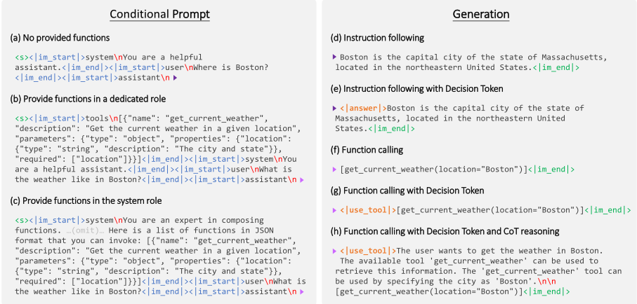

提升 LLM 函数调用（Function Calling）能力：提示格式、数据整合与多语言翻译策略
该论文针对 LLM 零样本工具调用中三个被以往工作忽视的维度展开：提示格式差异、function calling 数据与 instruction-following 数据的配比、以及多语言局限。作者以 Breeze-7B（基于 Mistral-7B）为基座、用 LoRA 微调，基于 ChatML 对比了在专用 tools role 与 system role 中放置函数描述两种条件提示模板，并系统考察混入 IF-110k 指令数据、引入 Decision Token（<|answer|>/<|use_tool|> 显式二分流）、合成 CoT 推理数据、以及面向繁体中文的定制翻译数据管线的效果。关键结论：混入 instruction-following 数据同时提升函数调用准确率与相关性检测；函数描述放专用 role 时 Relevance Detection 更优；Decision Token 配合合成非函数调用数据改善相关性检测但略降调用准确率；CoT 在 BFCL 类任务上无显著收益（84.44% vs 85.25%）；少量翻译数据即可显著提升繁体中文函数调用表现。
尽管基于微调的 function calling 方法已有进展，但提示格式差异的影响、function calling 数据与 instruction-following 数据的组合方式、以及多语言局限仍缺乏系统研究；同时合成数据集中负样本稀缺，导致相关性检测困难，模型在无相关函数可用时容易幻觉出函数与参数调用。
基于 ChatML 设计条件提示模板，对比两种函数描述组织方式：专用 tools role（JSON 格式）与嵌入 system role；将 FC-110k（来自 APIGen 与 glaive-function-calling-v2）与 IF-110k（来自 Open ORCA）混合微调 Breeze-7B（LoRA，r=16, alpha=32）；提出 Decision Token 机制，用 <|answer|> 与 <|use_tool|> 一对特殊 token 把'直接回答还是调用函数'变成显式二分类，并利用该机制从已有函数调用数据低成本合成非函数调用负样本（NF-1k）；用商业级 LLM 从对话与函数调用序列反向构造推理描述生成 CoT 数据（FC-110k-Reason）；提出保留函数名、函数描述与结构化调用、仅在合理时翻译参数的翻译管线，生成繁体中文数据（TC-19k）。
CoT 推理数据未带来显著提升：AST Summary 为 84.44%，低于不使用 CoT 的基线 85.25%
排除 instruction-following 数据（IF-110k，110k 条）后 AST Summary 与 Relevance Detection 均下降，混入该数据显著提升函数调用准确率与相关性检测（正文未给出具体数值）
专用 tools role 与 system role 在 MT-Bench 与 AST Summary 上能力相近，但专用 role 的 Relevance Detection 更优（正文未给出具体数值）
启用 function calling 能力不损害 instruction-following 性能（MT-Bench，各条件提示下均成立，正文未给出具体数值）
加入 Decision Token 与 1k 条合成非函数调用数据（NF-1k）提升 Relevance Detection，但 AST Summary 略有下降（正文未给出具体数值）
加入 19k 条翻译生成的繁体中文数据（TC-19k，含 18k 函数调用与 200 条非函数调用样本）显著提升繁体中文函数调用性能（正文未给出具体数值）
与 Gorilla、ToolAlpaca、ToolLLM、ToolACE 等聚焦合成数据生成与微调的工作不同，本文系统分析了提示与元信息设计差异、以及非 function calling 的 instruction tuning 数据对函数调用能力的影响；提出 Decision Token 机制以低成本从正样本构造非函数调用负样本、增强相关性检测；并给出针对函数调用数据定制的多语言翻译管线（不翻译函数名与描述、保护结构化调用完整性）。
相关度级别：high
命中能力域：3.2 提示工程 | 3.3 Agent 架构与工具使用 | 3.5 评测与可靠使用
理由：函数调用/工具调用是 3.3 域的核心技术，论文整体围绕该主题，包括函数描述在上下文中的组织方式与调用决策的可靠性；提示格式对比（专用 tools role vs system role）与 CoT 数据构造直接对应 3.2 的提示技术与模式、思维链推理；Relevance Detection（无相关函数时不幻觉调用）与 BFCL 的 AST Summary 评测方法对应 3.5 的可靠使用与评测基准。虽然论文采用微调路线而团队不做模型训练，但其关于提示格式选择、CoT 收益有限、相关性检测负样本构造的结论可直接指导团队在 Agent harness 设计、提示词资产与评测体系建设上的决策。
建议动作：深入精读并做内部分享
arXiv:2412.01130v2 [cs.CL] 2024年12月4日
增强大语言模型（LLM）的函数调用能力：提示格式、数据集成与多语言翻译策略
Yi-Chang Chen Po-Chun Hsu Chan-Jan Hsu Da-shan Shiu
联发科技（MediaTek Research）
{yi-chang.chen, pochun.hsu, chan.hsu, ds.shiu}@mtkresearch.com
大语言模型（LLM）显著推动了自主智能体的发展，尤其是在零样本工具调用（也称为函数调用）方面。本研究深入探讨了提升 LLM 函数调用能力的多种方法，包括：用于整合函数描述的提示格式、混合函数调用数据与指令遵循数据、为条件提示引入一种新颖的 Decision Token、利用思维链（chain-of-thought, CoT）推理，以及通过翻译流水线克服多语言挑战。我们的主要发现与贡献如下：（1）指令遵循数据可同时提升函数调用准确率与相关性检测能力。（2）采用新提出的 Decision Token，并结合合成的非函数调用数据，可增强相关性检测。（3）量身定制的翻译流水线有效克服了多语言限制，在繁体中文上展现出显著改进。这些发现凸显了 LLM 在提升函数调用能力与多语言应用方面的潜力。
近年来，自主智能体领域取得了显著进展，这在很大程度上得益于大语言模型（LLM）的能力。这些模型显著提升了自主智能体在多种任务上的表现（Huang et al., 2024; Qin et al., 2024; Qu et al., 2024）。这些智能体的一项关键能力是零样本工具使用，也称为函数调用。该能力使 LLM 能够从互联网或内部数据库获取最新信息，并利用第三方服务，从而实现与各种系统的集成。此类能力开辟了大量潜在应用，包括电子设计自动化（Zhong et al., 2023）、财务报告（Theuma and Shareghi, 2024）以及旅行规划（Hao et al., 2024）。
尽管通过基于微调的方法（Grattafiori et al., 2024; Liu et al., 2024a,b）在实现函数调用能力方面已取得进展，但在提示格式差异、函数调用数据与指令遵循数据的组合以及多语言限制等方面，研究仍存在空白。本工作旨在通过研究以下方面来填补这些空白：
提示格式：我们探索了将函数描述纳入提示的两种策略：（1）引入一个专门的角色来呈现函数描述；（2）将函数描述嵌入系统角色中，与使用说明并列。我们旨在确定这些格式对函数调用性能的影响。
数据整合：我们研究了函数调用数据与指令遵循数据的组合，以评估其对指令遵循能力和函数调用能力的影响。我们的研究结果表明，使用指令遵循数据可显著提升函数调用准确率与相关性检测能力。
Decision Token：我们提出了一种用于条件提示的新型 Decision Token，旨在提升相关性检测，并便于创建用于微调的合成非函数调用数据。我们的结果表明，加入 Decision Token 和非函数调用数据可增强函数调用相关性检测。
思维链（CoT）推理：我们通过一个合成数据流水线引入 CoT 推理，该流水线从对话与函数调用序列中构建推理描述。
多语言翻译：我们通过引入一个专门定制的翻译流水线来克服直接翻译方法所面临的挑战，从而解决当前函数调用模型的多语言限制。我们在繁体中文上的实验证实了该方法的有效性。
总而言之，本研究为提升 LLM 的函数调用能力提供了有价值的见解，并凸显了多语言应用的潜力。后续章节将详细介绍我们的方法、实验与结果，以展示所提策略的有效性。
将函数调用能力集成到 LLM 中，通过使其能够与外部工具和 API 交互，显著拓宽了其解决问题的能力。研究表明，集成 API 的 LLM 可以执行诸如编程辅助 (Gao et al., 2022)、实时信息检索 (Schick et al., 2023)、复杂数学计算 (He-Yueya et al., 2023) 以及互联网利用 (Komeili et al., 2021; Gur et al., 2024) 等任务。这使得 LLM 能够获取最新信息并利用第三方服务，从而促进与各种系统的集成，应用于电子设计自动化 (Zhong et al., 2023)、财务报告 (Theuma and Shareghi, 2024) 和旅行规划 (Hao et al., 2024) 等高级应用领域。
为实现此类函数调用能力，研究人员探索了两类主要方法。第一类涉及复杂的提示技术。诸如 ReACT (Yao et al., 2022) 及其后续工作 (Xu et al., 2023; Shinn et al., 2023; Yang et al., 2023b; Crouse et al., 2024; Wang et al., 2024) 等框架在提示中结合推理与行动，以引导模型的响应。
与我们的工作关系更为密切的第二类方法，侧重于通过微调训练模型生成函数调用。诸如 Gorilla (Patil et al., 2023)、ToolAlpaca (Tang et al., 2023)、ToolLlama (Qin et al., 2024) 以及 Nous-Research 的 Hermes 3 系列 (Teknium et al., 2024) 等微调模型，依靠 GPT-4 或 ChatGPT 等专有模型生成的合成数据来增强函数调用能力。NexusRavenV2 (Nexusflow.ai, 2023) 和 IBM 的 Granite-20BFunctionCalling (Abdelaziz et al., 2024) 等开源项目则旨在开发不依赖专有数据、适用于商业用途的函数调用模型。此外，许多工作还采用自监督来进一步提升跨多种领域的性能 (Schick et al., 2023; Parisi et al., 2022; Yang et al., 2023a; Liu et al., 2024a)。
在第二类方法的相关工作中，一些微调模型和数据集已被公开发布。例如，ToolAlpaca (Tang et al., 2023) 和 ToolLLM (Qin et al., 2024) 公开了其合成数据或数据生成流水线。ToolACE (Liu et al., 2024a) 则同时发布了微调后的 Llama 模型和自指令数据集。此外，Gorilla 团队开发了一个用于评估 LLM 函数调用能力的综合性基准测试（benchmark）(Yan et al., 2024)。
值得注意的是，ToolACE（Liu et al., 2024a）证明了多样化的函数调用样本数据有助于模型更好地学习函数调用能力。然而，目前尚缺乏全面的分析来考察提示与元信息设计的差异，以及与函数调用无关的指令微调数据的影响，会如何影响函数调用能力的有效性。现有研究往往采用特定的提示模板，而未对不同的设计进行深入考察，这表明该领域仍需进一步研究。
我们采用基于微调的方法，使大语言模型（LLM）同时具备函数调用与指令遵循能力。具体做法是，使用基于 Chat Markup Language（ChatML）的提示模板对预训练基础模型进行微调，ChatML 是由 OpenAI 提出的一种被广泛采用的格式。
我们探索了将函数描述纳入提示的两种主要策略：（1）引入一个专门的角色（如 tools），以 JSON 格式表示函数描述（图 1(b)）；（2）将函数描述与使用说明一同嵌入 system 角色中（图 1(c)）。在后一种策略中，指令遵循与函数调用均由系统提示引导。
在训练过程中，大语言模型被提供如上所述的条件提示，并被要求生成相应的文本补全。微调后的模型会根据上下文动态决定是直接回答还是调用函数。如果没有相关函数可用，模型将直接回答查询（图 1(d)）；否则，如果需要函数调用，模型将以函数列表的形式生成结构化的函数调用（图 1(f)）。

在实验中，我们研究了不同条件提示的性能对比，以及训练数据的使用在指令遵循与函数调用能力各项指标上的影响，相关讨论见第 4.2 节。
在相关性检测中取得高性能颇具挑战性，这往往受制于大多数合成数据集中负样本的稀缺（Liu et al., 2024a,b）。
为解决这一问题，我们提出了一种新颖的 Decision Token 机制。大语言模型（LLM）通过下一个词元预测（next-token prediction）生成回复，其中每一步都涉及一个用于选择下一个词元的分类任务。Decision Token 的概念正是利用了每个词元预测本质上都是一次分类这一事实。通过引入一对特殊词元，模型可以预测一个二分类，从而在分别生成详细回复或函数调用之前，先确定是直接回答查询还是调用函数。具体而言，该过程引入了一对特殊词元 <|answer|> 和 <|use_tool|>，如图 1(e) 和 (g) 所示。如果模型选择直接回答，它会先输出 <|answer|>；如果模型选择函数调用，则会先输出 <|use_tool|>。这一分类任务迫使模型在深入细节之前，先根据用户查询和所提供的函数做出决策，从而提升了其输出的稳定性。
Decision Token 还使得从函数调用数据构造非函数调用数据变得容易。为生成非函数调用数据，考虑这样一个例子：原始数据涉及三个函数 func_A、func_B 和 func_C。根据用户查询，func_A 是有用的，因此在原始数据点中被调用。通过假设 func_B 和 func_C 没有用处，我们可以将 func_A 从输入中移除，从而构造出非函数调用数据。在仅剩 func_B 和 func_C 作为可用函数的情况下，用户查询不应触发函数调用，而应提供直接回答。这使我们能够轻松获得非函数调用数据。此前，生成用于训练的非函数调用数据颇具挑战，因为这需要针对非函数调用情形的特定 LLM 回复。然而，借助 Decision Token，我们可以训练模型在非函数调用情形下仅输出 <|answer|>。在推理阶段，这并不会成为问题，因为模型会在 <|answer|> 之后继续给出合适的回复。
涉及 Decision Token 以及在合成非函数调用数据上进行训练的实验将在第 4.3 节中讨论。
思维链（CoT）推理已被证明能够通过引入中间推理步骤，显著提升模型在各类任务上的表现（Wei et al., 2022）。受此启发，我们探究 CoT 推理是否同样能够提升函数调用能力。为此，我们提出了一种合成数据生成流水线，该流水线基于对话与函数调用序列构建推理描述。该流水线利用与商业级 LLM 的单轮查询。在提示设计中，我们首先提供对话历史和可用函数，要求识别出为确定如何使用这些可用函数以实现目标函数调用所需的推理。此外，我们提供多个示例以增强稳定性（少样本学习，few-shot learning）。更多细节见附录 A。利用该流水线，我们生成能够捕捉思考过程的数据，随后用这些数据对基础 LLM 进行微调。微调过程采用结构化的提示模板，如图 1(h) 所示。有关引入 CoT 推理的实验将在第 4.4 节中介绍。
为了增强函数调用微调的多语言能力，将现有的英文函数调用数据集翻译为目标语言是一种常见做法。然而，这一过程面临重大挑战，因为函数名、枚举项和结构化函数调用等元素无法直接翻译，否则可能带来不一致或错误的风险。为了解决这些问题并保持翻译后数据集的语义与句法完整性，我们提出了一种新颖的翻译流水线，专门用于克服直接翻译方法的局限性。该流水线利用与商用级 LLM 的单轮查询。在我们的提示设计中，我们首先指定所提供的包含函数调用的对话轨迹的 JSON 格式。随后，我们指示 LLM 将数据翻译为目标语言，并遵循以下规则：不翻译函数名和描述，仅在合理的情况下翻译参数。更多细节见附录 B。验证该流水线有效性的实验在第 4.5 节中介绍。
在本节中，我们描述用于评估所提出方法的实验设置，包括数据集、模型配置、训练参数和评估指标的详细信息。
我们构建了一个多样化的微调数据集，其中同时包含指令遵循（instruction-following）和函数调用（function-calling）示例。指令遵循数据标记为 IF-110k，包含从 Open ORCA (Longpre et al., 2023) 中采样的 110k 个实例，该数据集是由 GPT-4 补全生成的合成数据集。函数调用数据标记为 FC-110k，同样包含 110k 个实例，来源于 APIGen (Liu et al., 2024b) 与 glaive-function-calling-v2 数据集 1 的组合。
我们使用 Breeze-7B 2 作为实验的基础模型。Breeze-7B (Hsu et al., 2024) 是一个基于 Mistral-7B 的开源语言模型，旨在提升繁体中文的语言理解能力和聊天机器人能力。借助 Breeze-7B，我们可以测试模型在英文和繁体中文两种语言上的有效性。
模型使用第 3.1 节所述的提示模板进行微调。在微调中，我们对线性层应用了低秩适配（low-rank adaptation, LoRA）技术。微调过程使用了以下超参数：学习率为 1e-4，批大小为 48，训练 3 个 epoch，余弦学习率调度器，AdamW 优化器，100 个预热步，LoRA 秩（r）为 16，LoRA α 为 32。
我们使用以下指标评估模型的性能：
AST Summary（%）：该指标用于 Berkeley Function Calling Leaderboard（BFCL）(Yan et al., 2024)，通过比较生成函数调用与目标函数调用的抽象语法树（Abstract Syntax Tree, AST）表示，评估语言模型在函数调用任务上输出的结构正确性。它包含四种问题类型——Simple Function、Multiple Function、Parallel Function 和 Parallel Multiple Function——根据所提供函数数量与函数调用数量的组合进行分类。该数据集由 400 个 Simple Function 任务以及其余三种类型各 200 个任务组成。AST Summary 是这四种类型上的平均准确率。
1 https://huggingface.co/datasets/glaiveai/glaive-functioncalling-v2
2 https://huggingface.co/MediaTek-Research/Breeze-7BBase-v1_0
| Use of Data?.Conditional Prompt | IF-110k | FC-110k | MT.Bench | AST Summary. | Relevance Detection. | |
|---|---|---|---|---|---|---|
| (a) | No provided functions | ⃝ | × | 5.46 | - | - |
| (b) | Provide functions in a dedicated role | ⃝ | ⃝ | 5.57 | 85.25 | 49.58 |
| (c) | Provide functions in the system role | ⃝ | ⃝ | 5.29 | 85.94 | 39.58 |
| (d) | Provide functions in a dedicated role | × | ⃝ | - | 74.62 | 38.33 |
| (e) | Provide functions in the system role | × | ⃝ | - | 74.50 | 27.08 |
| | Use of Data?.Conditional Prompt | IF-110k | FC-110k | MT.Bench | AST Summary. | Relevance Detection. |
| How to provide functions in a prompt?.Metrics on BFCL (Yan et al., 2024) : | In a dedicated role.AST Summary | In a dedicated role.Relevance Detection | In the system role.AST Summary | In the system role.Relevance Detection |
|---|---|---|---|---|
| Baseline | 85.25 | 49.58 | 85.94 | 39.58 |
| + Decision Token | 85.25 | 37.5 | 84.63 | 47.5 |
| + Non-function-call Data ( NF-1k ) | 84.81 | 57.5 | 83.44 | 65.42 |
| How to provide functions in a prompt?.Metrics on BFCL (Yan et al., 2024) : | In a dedicated role.AST Summary | In a dedicated role.Relevance Detection | In the system role.AST Summary | In the system role.Relevance Detection |
Relevance Detection（%）：该指标同样用于 BFCL，衡量当所提供的函数均不相关时模型不进行函数调用的成功率。该场景有助于判断当所提供的函数与用户查询无关时，模型是否会在函数和参数上产生幻觉。
MT-Bench（分数）：与以往工作不同，我们还探讨了在启用函数调用功能时指令遵循能力所产生的影响。MT-Bench (Zheng et al., 2023) 是一个用于评估这些能力的基准测试（benchmark）。我们使用 GPT-4o 作为评判者，给出满分 10 分的评分。
我们还使用 ZHTW 函数调用排行榜（Function Calling Leaderboard for ZHTW）（Lee et al., 2024）评估了繁体中文函数调用的性能，该排行榜通过翻译 BFCL 构建。因此，指标 AST Summary 和 Relevance Detection 的计算方式类似。
我们研究了不同条件提示以及训练数据的使用对指令遵循与函数调用能力各项指标的性能影响，如表 1 所示。条件提示在第 3.1 节中描述。训练数据的使用、训练设置以及指标在第 4.1 节中描述。
对比表 1(b) 和 (c)，以专用角色提供的函数与以系统角色提供的函数在指令遵循（MT Bench）和函数调用准确率（AST Summary）方面表现出相似的能力。但是，当函数以专用角色提供时，Relevance Detection 表现更优。我们推测，以专用角色提供函数使得包含函数的模板与不包含函数的模板存在显著差异，从而使模型更容易学习何时使用函数调用或直接回答。
对比表 1(a)、(b) 和 (c) 在 MT Bench 上的结果，我们发现无论给出何种条件提示，启用函数调用能力都不会降低指令遵循能力的性能。
对比表 1(b)、(c)、(d) 和 (e) 在 AST Summary 和 Relevance Detection 指标上的结果，我们发现当排除指令遵循数据（IF-110k）时，函数调用能力的性能会下降。这一观察值得注意。我们推测，函数调用能力的提升源于额外的指令遵循数据，这些数据帮助模型更好地理解提示的语义结构。因此，这种理解的提升增强了模型准确执行函数调用的能力。此外，指令遵循数据提供了更多非函数调用示例，进一步改善了 Relevance Detection。
| How to provide functions in a prompt?.Metrics on Function Calling Leaderboard forZHTW (Lee et al., 2024) : | In a dedicated role.AST Summary | In a dedicated role.Relevance Detection | In the system role.AST Summary | In the system role.Relevance Detection |
|---|---|---|---|---|
| Baseline | 52.37 | 36.67 | 50.81 | 47.08 |
| + Traditional Chinese Data ( TC-19k ) | 61.56 | 41.25 | 58.56 | 45.83 |
| How to provide functions in a prompt?.Metrics on Function Calling Leaderboard forZHTW (Lee et al., 2024) : | In a dedicated role.AST Summary | In a dedicated role.Relevance Detection | In the system role.AST Summary | In the system role.Relevance Detection |
总之，我们的实验表明，引入函数调用能力不会损害指令遵循性能。此外，使用指令遵循数据能显著提升函数调用准确率和 Relevance Detection。
为了验证 Decision Token 的有效性，如第 3.2 节所述，我们考察了逐步添加 Decision Token 以及合成非函数调用数据所产生的影响。
在基线实验中，我们使用 IF-110k 和 FC-110k 作为训练数据对基础模型进行微调。随后，我们将 Decision Token 添加到提示模板中，并在相同的训练数据上对基础模型进行微调。在最后一个实验中，我们采用第 3.2 节所述的合成方法生成了 1k 条非函数调用数据实例，标记为 NF-1k。然后使用 NF-1k、IF-110k 和 FC-110k 的组合对模型进行微调。本项研究的结果如表 2 所示。总之，我们的分析表明，采用 Decision Token 及其配套的合成非函数调用数据能够改善 Relevance Detection，但也会导致函数调用准确率（AST Summary）略有下降。
为了评估思维链（CoT）推理（第 3.3 节），我们为 FC-110k 中的每个函数调用生成了推理描述，构建了 FC-110k-Reason。将基于 IF-110k + FC-110k-Reason 训练的模型与基于 IF-110k + FC-110k 训练的模型进行比较后，我们发现函数调用准确率（AST Summary）并无显著提升，为 84.44%，而基线为 85.25%。我们推测，BFCL 中的问题在进行函数调用时可能并不需要推理。
为了评估第 3.4 节所述翻译流水线的有效性，我们使用来自 FC-110k 数据集的合成方法生成了 18k 个繁体中文函数调用实例。此外，我们还将第 3.2 节中详述的非函数调用案例生成流水线应用于该数据集，生成了 200 个繁体中文非函数调用数据实例。合并后的数据集称为 TC-19k。
在基线实验中，我们采用 Decision Token 方法，并以 IF-110k、FC-110k 和 NF-1k 数据集作为训练数据。随后，我们将 TC-19k 繁体中文数据纳入训练集。表 3 所示的结果表明，即使是少量的翻译数据也能显著提升函数调用性能。
我们的研究表明，将指令遵循数据与函数调用任务相结合能够显著提升函数调用能力。Decision Token 机制与合成的非函数调用数据相结合，进一步改进了相关性检测。此外，定制的翻译流水线有效缓解了多语言方面的挑战。这些发现凸显了提升大语言模型（LLM）函数调用能力并扩展其多语言水平的潜力，为实现更实用的现实世界应用铺平了道路。
以下提示词用于翻译函数调用数据，其中以 JSON 格式提供的函数调用数据在 {DATA} 中指定，目标语言在 {TARGET_LANG} 中标明，例如 "Traditional Chinese"。
该 JSON 对象描述了用户与助手之间的一段对话，包括助手可用来满足用户请求的可用函数。↪ → 在此 JSON 对象中： - ` functions ` 键列出了助手可以使用的可用函数，包括它们的描述和参数。↪ → - ` conversations ` 键描述了用户与助手之间的对话。↪ → - 助手回复中的 ` tool_calls ` 键显示了助手为满足用户请求而进行的函数调用，包括函数名称和参数。↪ → ↪ → ``` json {DATA} ``` 现在，我要将此 JSON 翻译成 {TARGET_LANG}。请注意： - 不要翻译 ` functions ` 中的任何内容 - 如果使用 {TARGET_LANG} 是合理的，则翻译 ` arguments ` 中的内容 请以上述相同的 JSON 格式提供你的翻译。